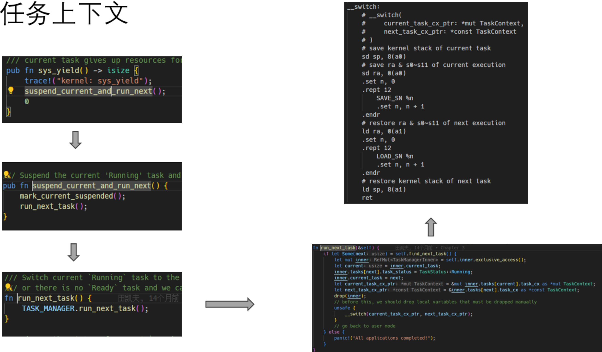
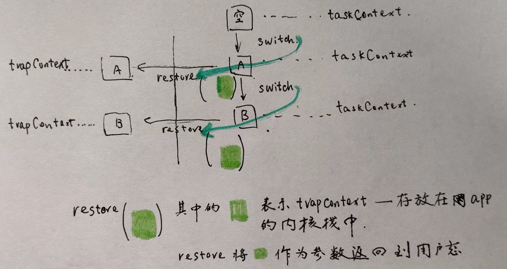

分时多任务
1. 从用户程序出发，因为内存足够大，把所有应用依次加载到各自的区域。而不是像前面，一次加载一个，每次加载到相同的区域
每个 app 会被编译到不同的起始处，对应地，load_app 也就需要改变。见 user/build.py 代码里。
for app in apps:
app = app[: app.find(".")]
os.system(
"cargo rustc --bin %s %s -- -Clink-args=-Ttext=%x"
% (app, mode_arg, base_address + step * app_id)
)
print(
"[build.py] application %s start with address %s"
% (app, hex(base_address + step * app_id))
)
if chapter == '3':
app_id = app_id + 1
本章，每一个应用依次加载到 $ base_address + step app_id = 0x80400000 + 0x20000 app_id $ 中。
在 kernel 侧，加载时就需要做相应的调整。
/// Load nth user app at
/// [APP_BASE_ADDRESS + n * APP_SIZE_LIMIT, APP_BASE_ADDRESS + (n+1) * APP_SIZE_LIMIT).
pub fn load_apps() {
extern "C" {
fn _num_app();
}
let num_app_ptr = _num_app as usize as *const usize;
let num_app = get_num_app();
let app_start = unsafe { core::slice::from_raw_parts(num_app_ptr.add(1), num_app + 1) };
// clear i-cache first
unsafe {
asm!("fence.i");
}
// load apps
for i in 0..num_app {
let base_i = get_base_i(i);
// clear region
(base_i..base_i + APP_SIZE_LIMIT)
.for_each(|addr| unsafe { (addr as *mut u8).write_volatile(0) });
// load app from data section to memory
let src = unsafe {
core::slice::from_raw_parts(app_start[i] as *const u8, app_start[i + 1] - app_start[i])
};
let dst = unsafe { core::slice::from_raw_parts_mut(base_i as *mut u8, src.len()) };
dst.copy_from_slice(src);
}
}
2. 引入了一个 syscall sys_yield，主动交出控制权。

先把当前的 app 暂停下来，寻找下一个 app。然后通过 __switch 就完成了 “暂停上一下任务，切换到下一个任务” 的功能。
/// Switch current `Running` task to the task we have found,
/// or there is no `Ready` task and we can exit with all applications completed
fn run_next_task(&self) {
if let Some(next) = self.find_next_task() {
let mut inner = self.inner.exclusive_access();
let current = inner.current_task;
inner.tasks[next].task_status = TaskStatus::Running;
inner.current_task = next;
let current_task_cx_ptr = &mut inner.tasks[current].task_cx as *mut TaskContext;
let next_task_cx_ptr = &inner.tasks[next].task_cx as *const TaskContext;
drop(inner);
// before this, we should drop local variables that must be dropped manually
unsafe {
__switch(current_task_cx_ptr, next_task_cx_ptr);
}
// go back to user mode
} else {
panic!("All applications completed!");
}
}
3. TaskContext

pub struct TaskContext {
/// Ret position after task switching
ra: usize,
/// Stack pointer
sp: usize,
/// s0-11 register, callee saved
s: [usize; 12],
}
trapContext 跳到内核时，保存了 app 在用户态执行的状态，因为涉及到特权权的切换，它要保存大多数 Register。
从内核态跳到用户态时，app 就可以继续执行。也就是说，我们可以把程序的状态保存下来，并合适的时候恢复。
当 app 跳到 内核态，告诉内核，当前 app 可以暂停， 而 TaskContext，在程序
trapContext 保存的是在用户态执行时的状态，而 TaskContext 保存的是用户程序进入内核执行的中间状态，TaskContext 在保存和恢复时不涉及到特权性的切换。
trapContext 是需要硬件辅助。TaskContext 不需要硬件的帮助，编译器为我们保存一部分 register。
trapContext 在哪里可以感知，硬件做了事情？
- trapContext 恢复后就回到了用户态执行，TaskContext 恢复后继续执行 app 在内核的操作。
4. 有了 trapContext 概念，内核第一次是如何进入用户态，执行第一个 app？
TaskContext::zero_init() 构造一个空的 TaskContext，
next_task_cx_ptr 是 第一个程序的上下文 作为 __switch 的第二个参数
/// Run the first task in task list.
///
/// Generally, the first task in task list is an idle task (we call it zero process later).
/// But in ch3, we load apps statically, so the first task is a real app.
fn run_first_task(&self) -> ! {
let mut inner = self.inner.exclusive_access();
let task0 = &mut inner.tasks[0];
task0.task_status = TaskStatus::Running;
let next_task_cx_ptr = &task0.task_cx as *const TaskContext;
drop(inner);
let mut _unused = TaskContext::zero_init();
// before this, we should drop local variables that must be dropped manually
unsafe {
__switch(&mut _unused as *mut TaskContext, next_task_cx_ptr);
}
panic!("unreachable in run_first_task!");
}
先把当前任务的状态保存下来，然后把下一个任务的状态恢复，并且最后调一个 ret 返回到 ra 指向的地址处。
__switch:
# __switch(
# current_task_cx_ptr: *mut TaskContext,
# next_task_cx_ptr: *const TaskContext
# )
# save kernel stack of current task
sd sp, 8(a0)
# save ra & s0~s11 of current execution
sd ra, 0(a0)
.set n, 0
.rept 12
SAVE_SN %n
.set n, n + 1
.endr
# restore ra & s0~s11 of next execution
ld ra, 0(a1)
.set n, 0
.rept 12
LOAD_SN %n
.set n, n + 1
.endr
# restore kernel stack of next task
ld sp, 8(a1)
ret
内核在为这些用户程序构造任务上下文时，它做的事情。
TASK_MANAGER 在初始化时，为每个用户程序初始化了任务上下文，
init_app_cx(i) 为每一个用户程序构造 trap 上下文，
/// Global variable: TASK_MANAGER
pub static ref TASK_MANAGER: TaskManager = {
let num_app = get_num_app();
let mut tasks = [TaskControlBlock {
task_cx: TaskContext::zero_init(),
task_status: TaskStatus::UnInit,
}; MAX_APP_NUM];
for (i, task) in tasks.iter_mut().enumerate() {
task.task_cx = TaskContext::goto_restore(init_app_cx(i));
task.task_status = TaskStatus::Ready;
}
为每一个用户程序在内核栈上构建 trapContext，每一个用户程序有了自己的内核栈。
/// get app info with entry and sp and save `TrapContext` in kernel stack
pub fn init_app_cx(app_id: usize) -> usize {
KERNEL_STACK[app_id].push_context(TrapContext::app_init_context(
get_base_i(app_id),
USER_STACK[app_id].get_sp(),
))
}
这个 trapContext 和批处理系统的逻辑是一样的，它的主要不同点是，现在，每一个用户程序都有了自己的内核栈了 KERNEL_STACK[app_id]。
因为批处理系统是一个接一个运行的，我们可以重复利用内核栈和用户栈。 但现在分时多任务系统不是一个接一个运行的，而是可以暂停一个，跳到去执行另一个。 所以，我们需要为每一个程序分配它的内核栈和用户栈。
这里的用户栈，好像从来没有讲到过，没有用过？
/// Create a new task context with a trap return addr and a kernel stack pointer
pub fn goto_restore(kstack_ptr: usize) -> Self {
extern "C" {
fn __restore();
}
Self {
ra: __restore as usize,
sp: kstack_ptr,
s: [0; 12],
}
}
这里把 rs 赋为 __restore 的地址，sp 赋了内核栈的地址，